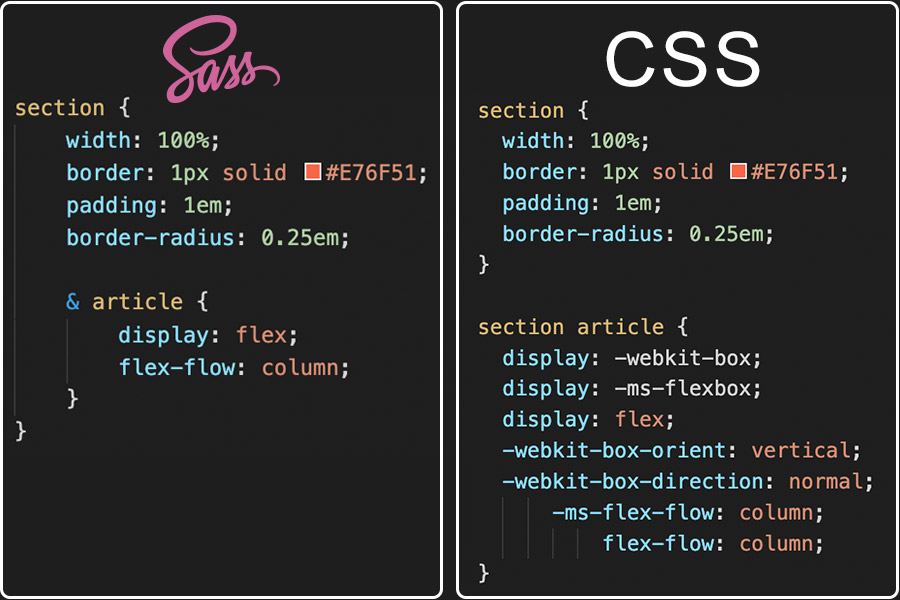

Sass
Client vs. Server-Side Implementation
There are two primary CSS pre-processing methods: LESS and SASS. LESS is a JavaScript library and is, therefore, processed client-side. Sass, on the other hand, runs on Ruby and is processed server-side. A lot of developers might not choose LESS because of the additional time needed for the JavaScript engine to process the code and output the modified CSS to the browser.1 For this project, I used a SASS live-compiler extension in Visual Studio Code to create the compiled CSS file.
Nested Rules
Sass will let you nest your CSS selectors in a way that follows the same visual hierarchy of your HTML. Be aware that overly nested rules will result in over-qualified CSS that could prove hard to maintain and is generally considered bad practice.2
Mixins
Some things in CSS are a bit tedious to write, especially with CSS3 and the many vendor prefixes that exist. A mixin lets you make groups of CSS declarations that you want to reuse throughout your site. You can even pass in values to make your mixin more flexible.2 For this project, a mixin was used to create the progressive transition delay used to expand and collapse the "hamburger" menu.
Variables
Think of variables as a way to store information that you want to reuse throughout your stylesheet. You can store things like colors, font stacks, or any CSS value you think you'll want to reuse. Sass uses the $ symbol to make something a variable.2 My SASS file used variables to define the palette colors and the gradient used in the text clip-fill and button background.